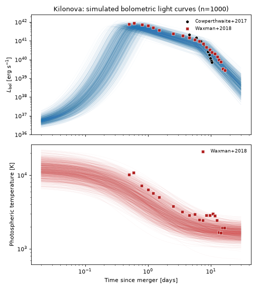
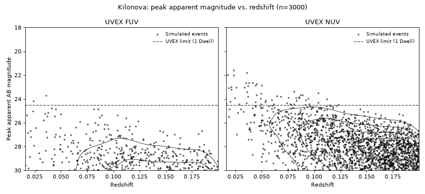
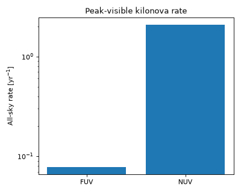

Kilonovae#
Kilonovae are modeled here as the radioactively-heated, neutron-rich ejecta of a compact-object merger (a binary neutron star or neutron star-black hole merger), calibrated to the one well-sampled event to date, AT2017gfo (GW170817) [1][2].
This population is implemented by Kilonova, pairing
KilonovaCoolingBlackbodySED with the rate/duration
metadata described below.
Quick Facts#
Quantity |
Value |
Source |
Notes |
|---|---|---|---|
Rate |
\(110^{+192}_{-82}\ \mathrm{Gpc}^{-3}\,\mathrm{yr}^{-1}\) (constant in \(z\)) |
Fishbach et al.[3] |
This is the total BNS merger rate reported by Fishbach et al.[3], not their narrower GW170817-like (\(\sim 1.3\,M_\odot + 1.3\,M_\odot\)) sub-rate. Adopting the total rate here means every BNS merger is assumed to produce a feasibly GW170817-like kilonova – a simplifying assumption made for this simulation, not one asserted by Fishbach et al.[3] itself. No redshift evolution is assumed. |
Redshift limit |
\(z = 0.2\) |
– |
See observability summary below. |
Duration |
30 days |
– |
Conservative: the early, blue component this SED targets fades below detectability by \(\sim 10\) days, but 30 days is used to safely bound the full light curve. |
SED Model#
KilonovaCoolingBlackbodySED models the kilonova as a
cooling blackbody photosphere: a Gaussian-rise/broken-power-law-decline bolometric light curve
(GaussianRiseBrokenPowerLawLightcurve) times
a normalized blackbody spectral shape
(BlackbodySpectrum) evaluated at a photospheric
temperature that itself declines as a power law from an early value \(T_0\) down to a late-time
floor \(T_\mathrm{floor}\). The functional forms are
This is a deliberately phenomenological choice: the rise of AT2017gfo was never actually observed (hence the Gaussian rise is unconstrained by data and merely provides a smooth turn-on), but the broken-power-law decline in bolometric luminosity and the power-law-to-floor cooling in temperature both broadly track the behavior reported by Waxman et al.[2], with the normalization of both anchored to the Cowperthwaite et al.[1] measurement at 0.6 days.
Parameter |
Symbol |
Prior |
Notes / Source |
|---|---|---|---|
|
\(L_0\) |
LogNormal(\(\log_{10}(L_0/\mathrm{erg\,s^{-1}})\); mean=41.8, \(\sigma\)=0.1) |
Anchored to Cowperthwaite et al.[1]’s \(L\approx6.8\times10^{41}\) erg/s at 0.6 d. |
|
\(t_\mathrm{peak}\) |
LogNormal(\(\log_{10}(t_\mathrm{peak}/0.6\,\mathrm{d})\); mean=0, \(\sigma\)=0.3) |
Anchored near the 0.6 d normalization epoch, with broad scatter since the rise was unobserved. |
|
\(\alpha_1\) |
Uniform(0.8, 1.2) |
Early-time post-peak decline index, \(L_\mathrm{bol}\sim t^{-\alpha_1}\) [2]. |
|
\(\alpha_2\) |
Uniform(3.0, 4.0) |
Late-time post-peak decline index, \(L_\mathrm{bol}\sim t^{-\alpha_2}\) [2]. |
|
\(t_\mathrm{break}\) |
Uniform(5 d, 10 d) |
Time the decline steepens from \(\alpha_1\) to \(\alpha_2\) [2]. |
|
\(T_0\) |
LogNormal(\(\log_{10}(T_0/\mathrm{K})\); mean=3.9, \(\sigma\)=0.1) |
\(\approx7900\) K, anchored to Cowperthwaite et al.[1]’s \(T\approx8300\) K at 0.6 d. |
|
\(T_\mathrm{floor}\) |
LogNormal(\(\log_{10}(T_\mathrm{floor}/\mathrm{K})\); mean=3.4, \(\sigma\)=0.08) |
\(\approx2500\) K asymptotic floor [2]. |
|
\(\alpha_T\) |
Uniform(0.3, 0.7) |
Early-time cooling index, \(T\sim t^{-\alpha_T}\) [2]. |
Simulated Light Curves#
The plot below draws 1000 random parameter realizations from the priors above and shows the resulting bolometric light curves and photospheric temperatures, together with the AT2017gfo measurements from Cowperthwaite et al.[1] and Waxman et al.[2] that the priors were anchored to.
(Source code, png, hires.png, pdf)
{kind=link}
{kind=link}

Observability Summary#
Below are the redshifts \(z\) and corresponding bandpass calculated peak apparent AB magnitudes \(m_\mathrm{AB}\) of 3000 simulated kilonovae drawn from the priors above, with the UVEX 1 Dwell limit of \(m<24.5\) overplotted. Findings here justify our confidence in a \(z=0.2\) redshift limit for this population.
(Source code, png, hires.png, pdf)
{kind=link}
{kind=link}

The anticipated rate of kilonovae detectable by UVEX at these limits is as follows assuming that any event above the \(m<24.5\) limit is detectable, and that the population is isotropic and homogeneous in comoving volume out to \(z=0.2\):
(Source code, png, hires.png, pdf)
{kind=link}
{kind=link}
